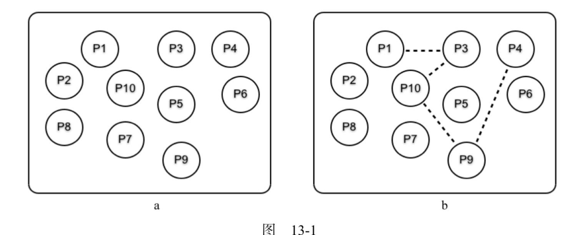
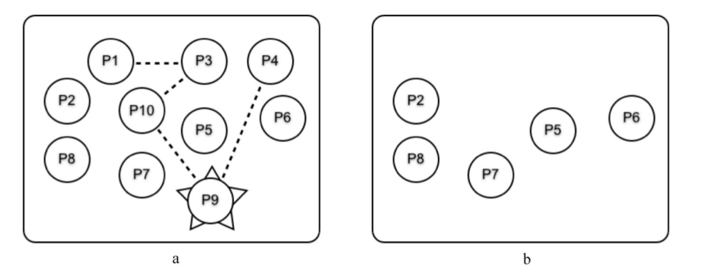
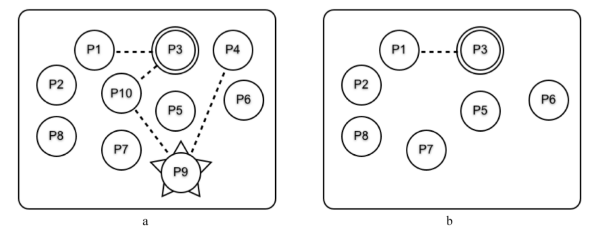

错误处理
Table of Contents
设想一个只有单一顺序进程的系统。如果这个进程挂了，麻烦可能就大了，因为没有其他进程能够帮忙 出于这个原因，顺序语言把重点放在故障预防上，强调进行防御式编程 相对于顺序程序，处理并发程序里的错误涉及一种完全不同的思考方式
在本章：
- 介绍错误处理的内在理念
- 关于错误是如何在进程间传播和被其他进程捕捉的细节
- 最后用一些小范例作为结尾，它们是编写容错式软件的起点
在Erlang里，我们有大量的进程可供支配，因此任何单进程故障都不算特别重要 通常只需编写少量的防御性代码，而把重点放在编写纠正性代码上 我们采取各种措施检测错误，然后在错误发生后纠正它们
错误处理
并发Erlang程序里的错误处理建立在 远程检测 和 处理错误 的概念之上
和在发生错误的进程里处理错误不同，我们选择让进程崩溃，然后在其他进程里纠正错误
在设计 容错式系统 时就 假设 错误会发生，进程会崩溃，机器会出故障 。我们的任务是：
- 在错误发生后检测出来，可能的话还要纠正它们
- 避免让系统的用户注意到任何的故障，或者在错误修复过程中遭受服务中断
因为重点在补救而不是预防上，所以系统里几乎没有防御性代码，只有在错误发生后清理系统的代码
这就意味着我们将把注意力放在：
- 如何 检测错误 和 识别问题来源
- 如何 保持系统处于稳定状态 上
检测错误和找出故障原因内建于Erlang虚拟机底层的功能，也是Erlang编程语言的一部分 标准OTP库提供了构建互相监视的进程组和在检测到错误时采取纠正措施的功能 这里介绍的是语言层面的错误检测和恢复
Erlang关于构建容错式软件的理念可以总结成两个容易记忆的短句： 让其他进程修复错误 和 任其崩溃
让其他进程修复错误
让别人来修复某个错误而不是自己动手是个不错的主意，能够促进专业化。如果我需要做手术，就会去找大夫，而不是尝试自己操作 如果我的汽车出了点小问题，车上的控制电脑就会尝试修复它。如果修复失败、问题变得更棘手了，就必须把车拉到修理厂，让其他人来修理它 如果某个Erlang进程出了点小问题，可以尝试用 catch 或 try 语句来修复它。但如果修复失败，就应该直接崩溃，让其他进程来修复这个错误
安排一些进程来互相监控各自的健康状况，如果一个进程挂了，其他某个进程就会注意到并采取纠正措施
这可以作为顺序代码错误处理的延伸：虽然可以捕捉顺序代码里的异常并尝试纠正错误，但如果失败了或者整台机器出了故障，就要让其他进程来修复错误
要让一个进程监控另一个，就必须在它们之间创建一个 连接 （ link ）或 监视 （ monitor ）：
- 如果被连接或监视的进程挂了，监控进程就会得到通知
- 监控进程必须实现 跨机器 的透明运作，因此运行在某一台机器上的进程可以监视运行在不同机器上进程的行为
这是编写容错式系统的基础： 不能在一台机器上构建容错式系统，因为崩溃的可能是整台机器，所以至少需要两台机器 一台机器负责计算，其他的机器负责监控它，并在第一台机器崩溃时接管计算
任其崩溃
如果来自C这样的语言，这听起来会非常奇怪。在C里，我们被教导要编写防御性代码，程序应当检查它们的参数以避免崩溃 在C里这么做很有必要：编写多进程代码极其困难，而绝大多数应用程序只有一个进程，所以如果这个进程让整个应用程序崩溃，麻烦可就大了 这意味着需要大量的错误检查代码，它们会和非错误检查代码交织在一起
在Erlang里，所做的恰恰相反。会把应用程序构建成两个部分：
- 一部分负责 解决问题 ：负责解决问题的部分会尽可能地少用防御性代码，并假设函数的所有参数都是正确的，程序也会正常运行
- 另一部分负责在 错误发生时纠正它们 ：纠正错误的部分往往是通用的，因此同一段错误纠正代码可以用在许多不同的应用程序里
如果数据库的某个事务出了错，就简单地中止该事务，让系统把数据库恢复到出错之前的状态 如果操作系统里的某个进程崩溃了，就让操作系统关闭所有打开的文件或套接字，然后让系统恢复到某个稳定状态
这么做让任务有了清楚的区分：编写解决问题的代码和修复错误的代码，但两者不会交织在一起。代码的体积可能会因此显著变小
为何要崩溃
让程序在出错时立即崩溃通常是一个很好的主意。事实上，它有不少优点：
- 不必编写防御性代码来防止错误，直接崩溃就好
- 不必思考应对措施，而是选择直接崩溃，别人会来修复这个错误
- 不会使错误恶化，因为无需在知道出错后进行额外的计算
- 如果在错误发生后第一时间举旗示意，就能得到非常好的错误诊断。在错误发生后继续运行经常会导致更多错误发生，让调试变得更加困难
- 编写错误恢复代码时不用担心崩溃的原因，只需要把注意力放在事后清理上
- 它简化了系统架构，这样就能把应用程序和错误恢复当成两个独立的问题来思考，而不是一个交叉的问题
相关理念已经介绍得差不多了，接下来将深入其中的细节
术语
在这一节里,将学到进程间错误处理的术语含义。你会看到一些新名词,在本章的后面还会再次遇到它们
理解错误处理的最佳方式是快速浏览这些名词的定义,然后跳到后面几节,通过更直观的方式理解相关的概念
进程
进程有两种:
- 普通进程：spawn 创建的是普通进程
- 系统 进程：普通进程可以通过执行内置函数 process_flag(trap_exit, true) 变成系统进程
连接
进程可以 互相连接
如果 A 和 B 两个进程有连接,而 A 出于某种原因终止了,就会向 B 发送一个错误信号,反之亦然
连接组
进程 P 的 连接组 是指 与 P 相连的一组进程
监视
监视和连接很相似,但它是 单向 的
如果 A 监视 B ,而 B 出于某种原因终止了,就会向 A 发送一个“宕机”消息,但反过来就不行了
错误信号
进程协作的方式是交换 消息 或 错误信号 ：
- 消息：通过基本函数 send 发送的
- 错误信号： 进程崩溃 或 进程终止 时自动发送的，错误信号会发送给 终止进程的连接组
错误信号的接收
当系统进程收到错误信号时,该信号会被转换成 {'EXIT', Pid, Why} 形式的消息：
- Pid: 终止进程 的标识
- Why: 终止原因 (有时候被称为退出原因)
- 如果进程是 无错误终止 Why 就会是原子 normal
- 否则 Why 会是错误的描述
当普通进程收到 错误信号 时,如果 退出原因不是 normal ,该进程就会终止
当它终止时,同样会向它的连接组广播一个退出信号
显式错误信号
- 任何执行 exit(Why) 的进程都会终止(如果代码不是在 catch 或 try 的范围内执行的话), 并向它的连接组广播一个带有原因 Why 的退出信号
- 进程可以通过执行 exit(Pid, Why) 来发送一个 虚假 的 错误信号 ：
- 在这种情况下, Pid 进程 会收到一个带有原因 Why 的退出信号
- 主动调用 exit/2 的进程则不会终止（这是有意如此的）
不可捕捉的退出信号
系统进程 收到 摧毁信号 ( kill signal )时会 终止 ：
- 摧毁信号是通过调用 exit(Pid, kill) 生成的
- 这种信号会绕过常规的错误信号处理机制 不会被转换成消息
- 摧毁信号只应该用在 其他错误处理机制无法终止 的顽固进程上
这些定义可能看上去很复杂,但通常不必深入理解这些机制的工作原理也能编写出容错式代码 系统在错误处理方面的默认行为是尝试“做正确的事”
连接
假设有一组互不相关的进程,如下图所示，虚线代表了连接：

为了创建连接,会调用基本函数 link(Pid) ,它会在 调用进程 和 Pid 之间 创建 一个 连接
因此,如果 P1 调用 link(P3) , P1 和 P3 之间就会建立连接 P1 调用了 link(P3) , P3 又调用了 link(P10)，以此类推，最终得到了图中所展示的情形 请注意, P1 的连接组只有一个元素(P3)，而 P3 的连接组有两个元素(P1 和 P10)
同步终止的进程组
通常,我们希望创建能够 同步终止 的 进程组 。在论证系统行为的时候,这是一个非常有用的不变法则：
- 当多个进程合作解决问题而某处出现问题时,有时候我们能进行恢复
- 但如果无法恢复,就会希望之前所做的一切事情都停止下来
它和事务(transaction)这个概念很像:进程要么做它们该做的事,要么全部被杀死
假设我们有一些相互连接的进程而其中的某个进程挂了,比如下图中的 P9 。图a展示了 P9终止前各个进程是如何连接的，图b展示了 P9 崩溃且所有错误信号都处理完成后还剩下哪些进程：

当 P9 终止时：
- 一个错误信号被发送给进程 P4 和 P10 。因为 P4 和 P10 不是系统进程,所以也一起终止了
- 随后,错误信号被发送给与它们相连的所有进程
- 最后,错误信号扩散到了所有相连的进程,整个互连进程组都终止了
事实上：如果 P1 、 P3 、 P4 、 P9 或 P10 里的任意进程终止,它们就会全部终止
设立防火墙
有时候我们不希望相连的进程全部终止,而是想让系统里的错误停止扩散。下图对此进行了演示,里面所有的相连进程都会终止,一直到 P3 为止：

要实现这一点, P3 可以执行 process_flag(trap_exit, true) 并转变成一个系统进程(意思是它可以捕捉退出信号)。如图b所示,它用双圆来表示
P9 崩溃之后,错误的扩散会在 P3 处停止,因此 P1 和 P3 不会终止 P3 充当了一个防火墙,阻止错误扩散到系统里的其他进程中
监视
监视与连接类似,但是有几处明显的区别：
- 监视是 单向 的：如果 A 监视 B 而 B 挂了,就会向 A 发送一个退出消息,反过来则不会如此(别忘了连接是双向的,因此如果 A 与 B 相连,其任何一个进程的终止都会导致另一个进程收到通知)
- 如果被监视的进程挂了,就会向监视进程发送一个 宕机 消息,而不是退出信号。这就意味着 监视进程即使不是系统进程也能够处理错误
因此当想要不对称的错误处理时,可以使用监视,对称的错误处理则适合使用连接
监视通常会被服务器用来监视客户端的行为
基本错误处理函数
下列基本函数被用来操作连接和监视,以及捕捉和发送退出信号
创建连接
link(Pid) -> true
它会创建一个与进程 Pid 的连接：
- 连接是双向的：如果进程 A 执行了 link(B) ,就会与 B 相连，实际效果就和 B 执行 link(A) 一样
- 如果进程 Pid 不存在,就会抛出一个 noproc 退出异常
- 如果执行 link(B) 时 A 已经连接了 B (或者相反),这个调用就会被忽略
创建进程并同时连接
spawn_link(Func) -> Pid. spawn_link(Mod, Func, Args) -> Pid.
它们的行为类似于 spawn(Fun) 和 spawn(Mod,Func,Args) ,同时还会在父子进程之间创建连接
移除连接
unlink(Pid) -> true.
移除当前进程和进程 Pid 之间的所有连接
设立监视
monitor(process, Item) -> Ref.
它会设立一个监视：
- Item 可以是进程的 Pid ,也可以是它的 注册名称
- Ref: 该 进程的引用
如果这个进程因为 Why 的原因终止了,消息 {'DOWN',Ref,process,Pid,Why} 就会被发往 父进程
创建进程并同时设立监视
spawn_monitor(Func) -> {Pid, Ref}. spawn_monitor(Mod, Func, Args) -> {Pid, Ref}.
它与 spawn_link 相似,但创建的是监视而非连接
移除监视
demonitor(Ref) -> true.
移除以 Ref 作为引用的监视
转变成系统进程
process_flag(trap_exit, true).
它会把当前进程转变成系统进程，系统进程是一种能 接收 和 处理 错误信号 的进程
终止进程
exit(Why) -> none().
它会使当前进程因为 Why 的原因终止，如果执行这一语句的子句不在 catch 语句的范围内：
- 此进程就会向当前 连接的所有进程 广播 一个 带有参数 Why 的 退出信号
- 它还会向所有 监视它的进程 广播 一个 DOWN 消息
发送退出信号
exit(Pid, Why) -> true.
它会向进程 Pid 发送一个带有原因 Why 的退出信号 。执行这个内置函数的进程本身不会终止，它只是被用于模拟一个退出信号
可以用这些基本函数来设立互相监视的进程网络，并把它作为构建容错式软件的起点
容错式编程
在这一节里,将学到一些编写容错式代码的简单技巧
这并不是编写容错式系统的完整教程,而是一个起点
在进程终止时执行操作
函数 on_exit(Pid, Fun) 会监视进程 Pid ,如果它因为原因 Why 退出了,就会执行 Fun(Why) ：
on_exit(Pid, Fun) -> spawn(fun() -> Ref = monitor(process, Pid), receive {'DOWN', Ref, process, Pid, Why} -> Fun(Why) end end).
- monitor(process, Pid) ：对 Pid 创建了一个监视
- 当这个进程终止时,监视进程就会接收一个 DOWN 消息并调用 Fun(Why)
测试
为了测试它,现在来定义一个 F 函数,让它等待一个消息 X 然后计算 list_to_atom(X) :
F = fun() -> receive X -> list_to_atom(X) end end.
现在创建一个运行F的进程：
2> F = fun() -> receive X -> list_to_atom(X) end end. #Fun<erl_eval.20.50752066> 3> 3> Pid = spawn(F) . <0.44.0>
设立一个 on_exit 处理进程来监视它：
4> lib_misc:on_exit(Pid, fun(Why) -> io_format(" ~p died with ~p~n", [Pid, Why]) end) . <0.46.0>
如果向 Pid 发送一个原子,这个进程就会挂掉(因为它试图对非列表类型执行 list_to_atom )，同时 on_exit 处理进程则会得到通知：
5> Pid ! hello . hello 6> 6> =ERROR REPORT==== 18-Mar-2021::10:14:51 === Error in process <0.44.0> with exit value: {badarg,[{erlang,list_to_atom,[hello],[]}]} =ERROR REPORT==== 18-Mar-2021::10:14:51 === Error in process <0.46.0> with exit value: {{shell_undef,io_format,2,[]}, [{shell,shell_undef,2,[{file,"shell.erl"},{line,1059}]}, {erl_eval,local_func,6,[{file,"erl_eval.erl"},{line,562}]}]}
进程挂掉时触发的函数可以执行任何它喜欢的计算:它可以忽略错误,记录错误或者重启应用程序
这个选择完全取决于程序员
原子操作
以前,Erlang有两个基本函数: spawn 和 link ,而spawn_link(Mod, Func, Args) 的定义是下面这样的:
spawn_link(Mod, Func, Args) -> Pid = spawn(Mod, Fun, Args), link(Pid), Pid.
后来出现了一个诡异的bug：创建出的进程在连接语句被调用前就挂了，因此进程的退出并没有生成错误信号
这个bug花了好长时间才找到，为了修复这个问题,添加了原子操作 1 的 spawn_link 只要涉及并发,看似简单的程序也可能会变得很棘手
让一组进程共同终止
假设要创建若干工作进程来解决某个问题,它们分别执行函数 F1, F2… 。如果任何一个进程挂了,我们希望它们能全体终止。可以调用 start([F1,F2, …]) 来实现这一点：
start(Fs) -> spawn(fun() -> [spwan_link(F) || F <- Fs], receive after infinity-> true end end).
start(Fs): 会创建出一个进程，后者随即创建并连接各个工作进程，然后无限期等待
如果任何一个工作进程挂了,它们就都会终止
如果想知道这些进程是否都已终止,可以给启动进程添加一个 on_exit 处理进程：
Pid = start([F1, F2, ...]), on_exit(Pid, fun(Why) -> %... 如果任何一个工作进程挂了 %... 就执行这里的代码 true end)
生成一个永不终止的进程
将生成一个持久运行的进程。具体做法是生成一个始终活动的注册进程,如果它出于任何原因挂了,就会立即重启
keep_alive(Name, Fun) -> register(Name, Pid = spawn(Fun)), on_exit(Pid, fun(_Why) -> keep_alive(Name, Fun) end).
这段代码生成一个名为 Name 的注册进程,并让它执行 spawn(Fun) ，如果这个进程出于任何原因挂了,就会被重启
思考
on_exit 和 keep_alive 里有一个相当微妙的错误。如果仔细查看下面这两行代码:
Pid = regist(...), on_exit(Pid, fun(X) -> ...)
程序有可能会在这两个语句之间挂掉，如果进程在 on_exit 被执行之前终止,就不会创建连接, on_exit 进程的行为就会和预计的不同
如果有两个程序同时尝试用相同的一段代码（同一个 Name 值并执行 keep_alive）,这个错误就会发生
两段代码(都是这段)和 on_exit 里执行连接操作的代码片段正在互相竞争，这被称为 竞争条件 (race condition)
组合使用 spawn 、spawn_monitor 和 register 等Erlang基本函数时,必须仔细考虑潜在的竞争条件,确保代码不会让这些状况发生 如果这里出了错,程序就可能会表现出你预料之外的行为
总结
现在已经了解了下所有错误处理的知识：
- 顺序代码无法捕捉的错误会从发生错误的进程中流出,沿着连接到达其他进程,而后者可以根据设定来处理这些错误
- 描述过的所有机制(连接过程等)都可以实现跨机器的透明运作
跨机器运作带领我们进入了分布式编程的领域 Erlang进程可以在网络上的其他物理机器中创建出新的进程，这让编写分布式程序变得简单了 而这正是下一章的主题